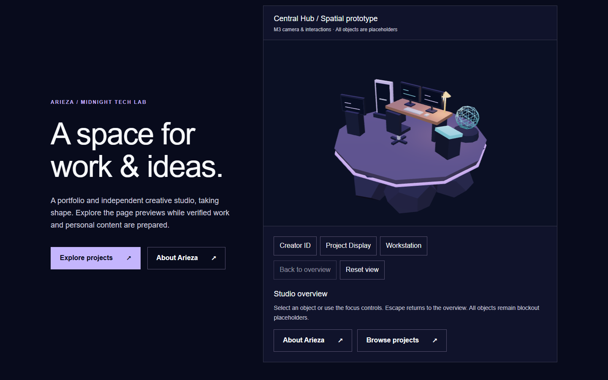
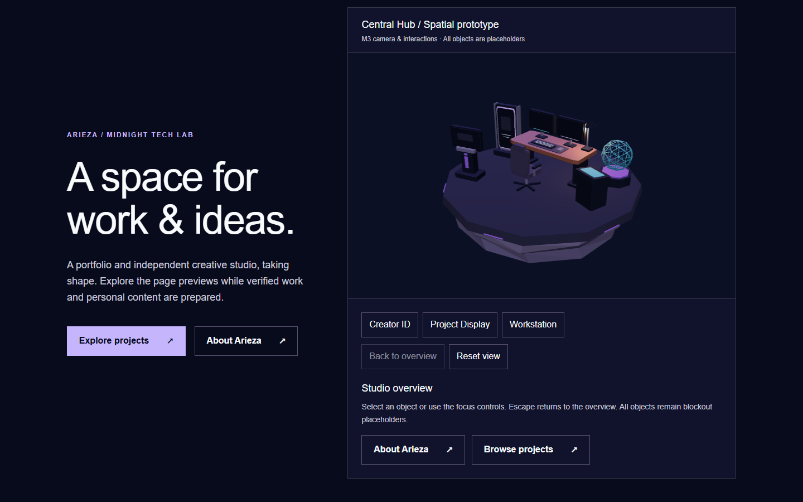
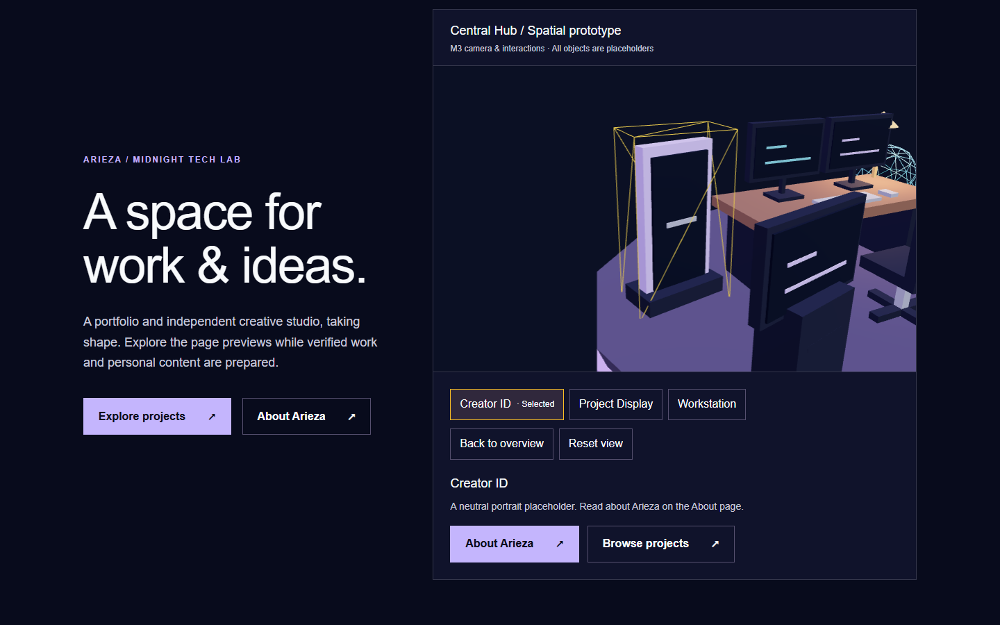
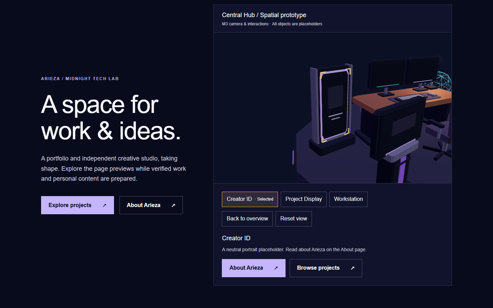
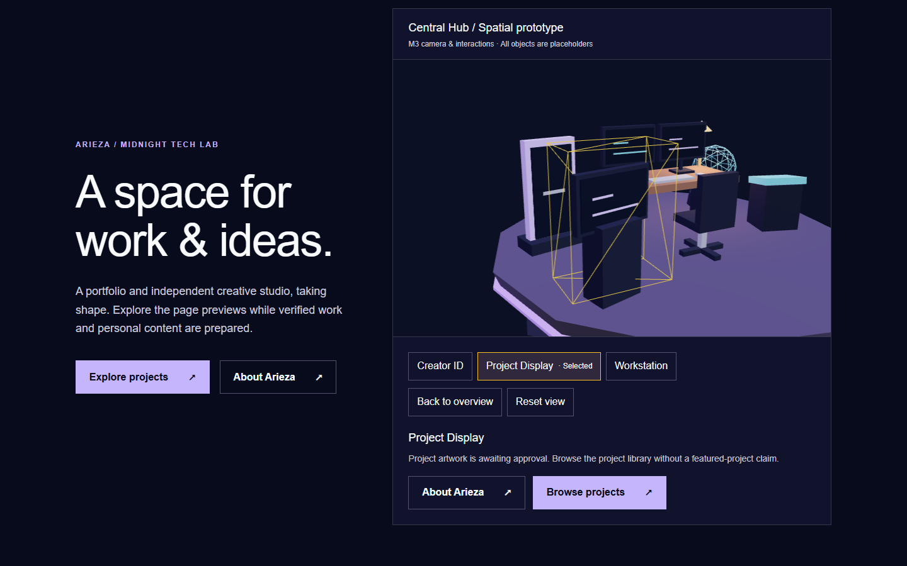
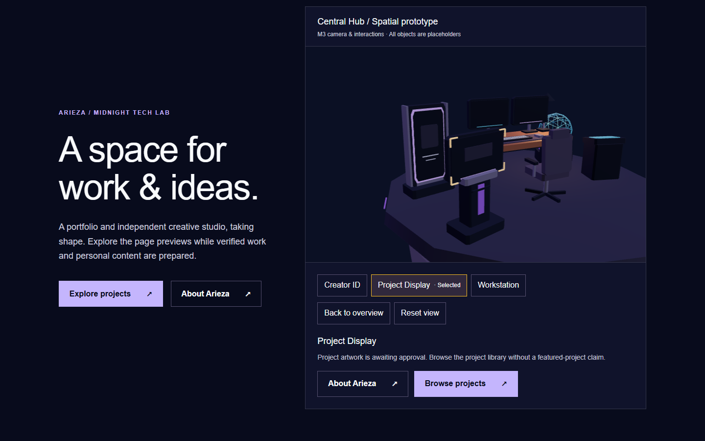
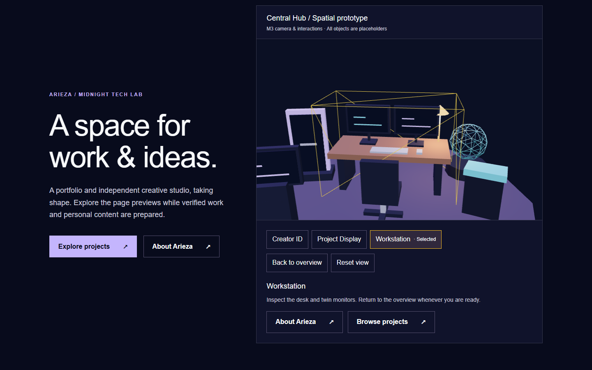

Central Hub — M5-A geometry review
Fresh accepted-M4 baseline (left) and procedural refinement (right). Same 1440×900 viewport, camera values and lighting. Prototype materials and blank displays; no final visual approval implied.
Overview
Before — M4
After — M5-A
Creator ID
Before — volume outline
After — integrated corners
Project Display
Before — block pedestal
After — exhibition plinth
Workstation
Before — blockout
After — construction and silhouette
Baseline measurements · After measurements